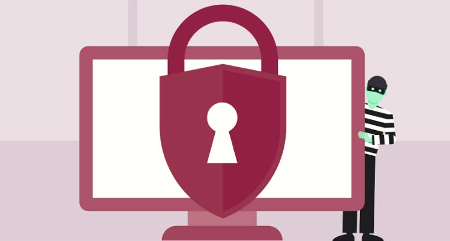
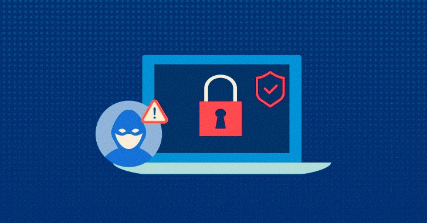

Protect Your Business With These 5 Steps To Zero-Day Attack Prevention
Every day, organizations like yours must worry about zero-day attacks. An attacker uses a zero-day exploit to take advantage of a security hole, which the developer of a software product has yet to detect and patch. These attacks are becoming more and more common, and they can be devastating. The best defense is to be prepared with a strategy.
What is a Zero-Day Attack?
A vulnerability in the software program that was previously unknown is a zero-day threat, and the term zero-day literally refers to how long since the last such incident was discovered. Estimates suggested that the days following the discovery of the vulnerability would be critical.
Zero-day exploitations are flaws that security firms have never observed before and don't have days to repair. It's best to protect yourself against it by routinely taking a look at your own information.
A new malware puzzle can be offered to the creator of the worm or virus. It may then be sent out to hundreds of thousands of users so that the maximum amount of damage can be done. At a prompt, the malware can spread as far as possible before a defense system is deployed or updated.
We can protect your company or lessen the damage from a zero-day attack in numerous ways.

1. Preventative safety is advisable
The best way to prevent potential threats from damaging your system is to stop them from ever occurring. A robust firewall and high-quality antivirus are the best defenses against cyberattacks.
Setting up a firewall over your connection will restrict access to your network without your knowledge. Even if you know nothing about a malicious attempt to take control, targeted activity moving through your network can be blocked.
Similarly, modern antivirus can usually detect an attack even when it can not detect the exact threat from its database. Even if it identifies malicious intent as a result of learned patterns in the computer system, it can deploy countermeasures.
2. A Locked Down Network
Once a new zero-day problem emerges, our goal is to limit its effects by restricting user access to only the necessary files and systems. This will minimize adverse effects to the smallest number of systems. The primary tenet of sound security policy is that no account should have unrestricted access to any system needed to complete the user's job. As an example, assigned members of the accounts department must not have access to sales department databases.
This way, the damage in one single area is limited only to the area associated with the compromised account. Such limited impact is easy to control and can be corrected with regular backups.
3. Good Data backup
Whether the whole network has been exposed to a cyberattack or only a small fraction of it abused, good backups are the protection against major lasting harm. Make certain the procedures for creating regular backup copies and running standard recovery are accurate.
Backups built with extensive training and proven systems, as a whole, are very valuable. Being aware that your data is secure and your system can be restored in the event of an attack is one of the priceless benefits of disaster recovery plans.
4. Intrusion Protection
Network intrusion protection system (NIPS) can manage a computer network to stop possible security breaches before they occur.
NIPS has greater usefulness than software with an antivirus database system. The update or update is not required to access the latest threats. NIPS monitors the selected networks over the course of the day and note the changes in their operational patterns.
If there is an unexpected or anomalous traffic or event that calls for action, then staff members can take it to notify security administrators and lockdown the firewall. For example, USB devices or mobile devices can penetrate the firewall because they are physically connected to it.
Within the network, NIPS protects against potential threats from both external and internal sources.

5. Full Cover Protection
By applying these techniques, it is possible to predict, protect against, and mitigate the risk of many kinds of security risks that even the most experienced security firms have not yet dealt with. It's definitely vital to keep your firm safe no matter where it may encounter issues in the future. And, having security specialists available 24/7 is definitely a great benefit.
In Conclusion, organizations looking to prevent Zero-Day attacks should first implement application security practices that cover vulnerabilities such as code injection and SQL injection. Organizations should also consider implementing network-based security features to protect against vulnerabilities such as session hijacking and cross-site scripting.